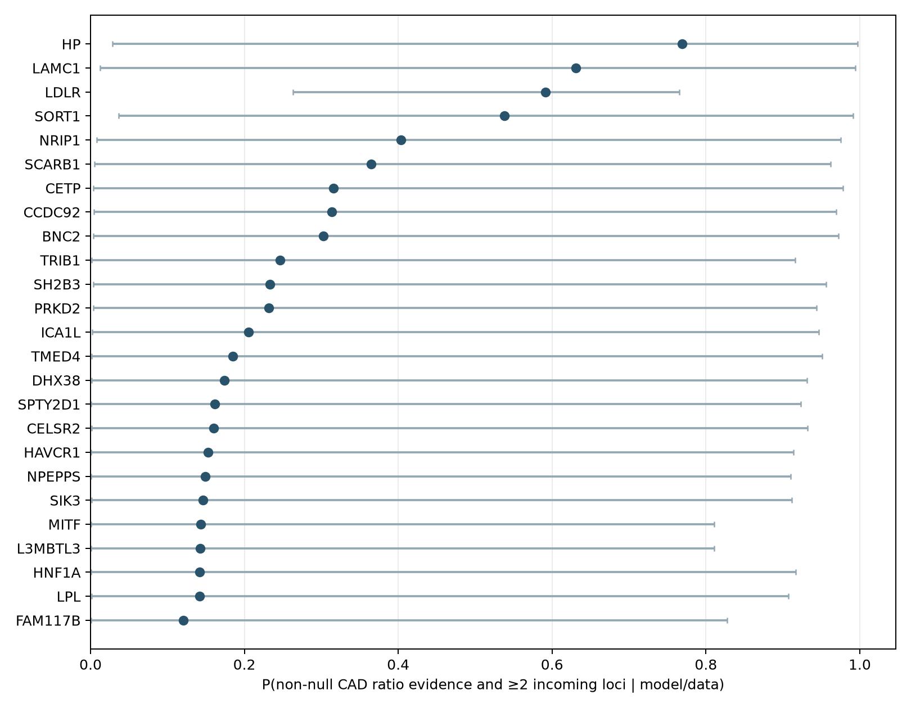
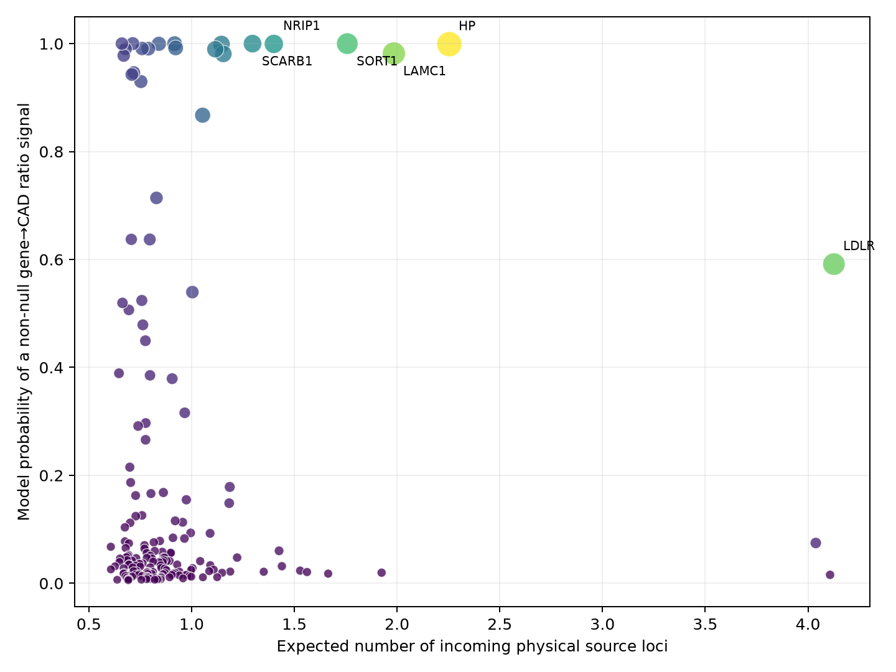
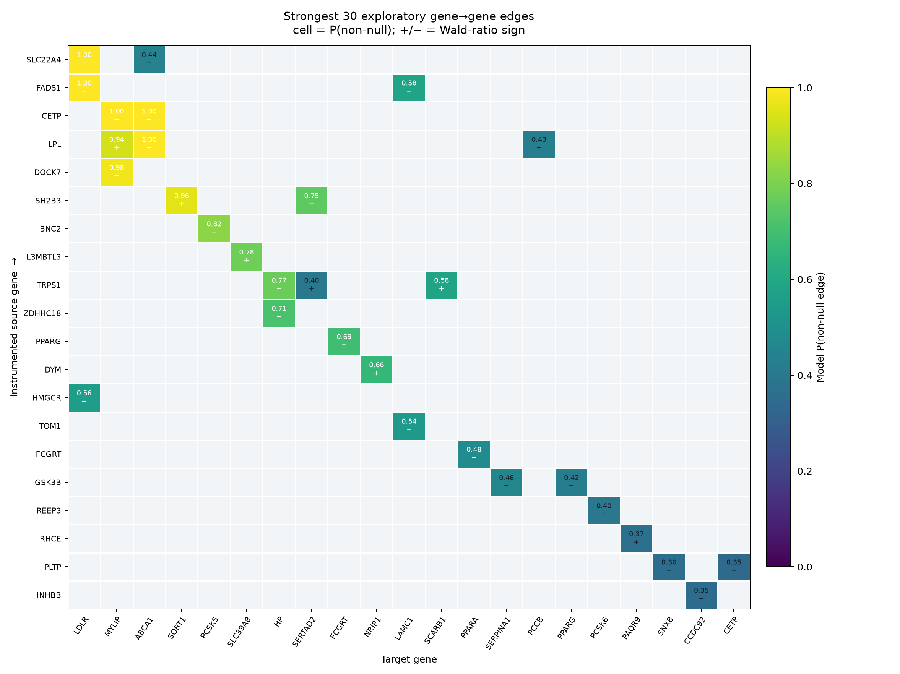
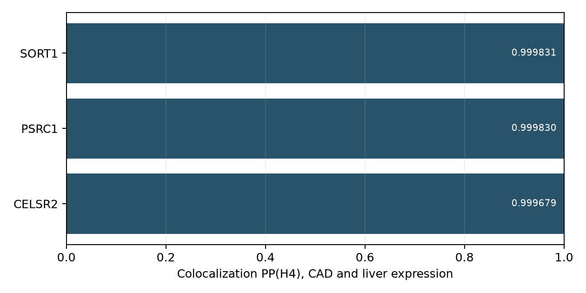

A real-data research prototype asking which LDL-locus candidate genes have both genetically anchored expression-to-CAD ratio evidence and convergent incoming whole-blood expression associations.
Non-estimability in whole blood is a data-coverage result, not negative biological evidence.
| stage | count | note |
|---|---|---|
| prespecified LDL-locus candidate genes | 239 | Open Targets L2G rule plus verified BayesV2G seeds |
| genes with a harmonized CAD Wald ratio | 173 | separate CAD GWAS; valid allele-frequency scaling required |
| genes passing disease instrument/effect QC | 173 | F >= configured threshold |
| candidate network source genes | 114 | cis instrument present in fixed eQTLGen trans-tested SNP universe |
| candidate network target genes | 182 | complete tested trans coefficient available |
| targets meeting network coverage threshold | 182 | missing pairs were not coded as null edges |
| genes eligible for primary core ranking | 173 | requires disease evidence and sufficient network coverage |
The prespecified definition is C_j(m)=D_j × 1(K_j≥m), where D is non-null gene→CAD Wald-ratio evidence and K counts probabilistic incoming physical source loci. The primary threshold is m=2; m=3 and m=5 are reported as sensitivity definitions. With 97 source loci and the configured priors alone, before observing effect estimates, P(K≥2) is 0.253 and P(C(m=2)) is 0.025; rankings should be interpreted as evidence updates from that baseline.
Observed: HP ranks first at m=2 (P=0.769; prior/slab range 0.029–0.997). LDLR ranks first at m=3 (P=0.543) and LDLR ranks first at m=5 (P=0.209). Wide sensitivity ranges are part of the result, not uncertainty bars for a calibrated probability of biological truth.


| core_rank | gene_symbol | p_core_m2 | p_core_m3 | p_core_m5 | disease_probability | expected_incoming_loci | network_coverage | p_core_m2_sensitivity_min | p_core_m2_sensitivity_max |
|---|---|---|---|---|---|---|---|---|---|
| 1 | HP | 0.7694 | 0.3677 | 0.02579 | 0.999 | 2.254 | 0.9897 | 0.02883 | 0.997 |
| 2 | LAMC1 | 0.6307 | 0.2929 | 0.02242 | 0.9818 | 1.984 | 0.9897 | 0.01256 | 0.9941 |
| 3 | LDLR | 0.5914 | 0.5428 | 0.2088 | 0.5914 | 4.126 | 1 | 0.2635 | 0.7651 |
| 4 | SORT1 | 0.5383 | 0.1842 | 0.008037 | 1 | 1.758 | 0.9794 | 0.0365 | 0.9915 |
| 5 | NRIP1 | 0.4036 | 0.124 | 0.004539 | 0.9994 | 1.4 | 0.9897 | 0.008101 | 0.9752 |
| 6 | SCARB1 | 0.3651 | 0.1077 | 0.00367 | 1 | 1.297 | 0.9794 | 0.005033 | 0.9622 |
| 7 | CETP | 0.3157 | 0.09583 | 0.003704 | 0.9992 | 1.146 | 0.9897 | 0.003691 | 0.9779 |
| 8 | CCDC92 | 0.3133 | 0.09503 | 0.003603 | 0.981 | 1.154 | 0.9794 | 0.004045 | 0.9696 |
| 9 | BNC2 | 0.3029 | 0.09329 | 0.003824 | 0.9895 | 1.115 | 0.9897 | 0.003421 | 0.9723 |
| 10 | TRIB1 | 0.2463 | 0.07495 | 0.003104 | 0.8674 | 1.054 | 0.9897 | 0.001753 | 0.9161 |
| 11 | SH2B3 | 0.2331 | 0.06285 | 0.002051 | 1 | 0.9171 | 0.9794 | 0.003691 | 0.9563 |
| 12 | PRKD2 | 0.232 | 0.06115 | 0.00186 | 0.9921 | 0.9223 | 0.9691 | 0.00362 | 0.9435 |
| 13 | ICA1L | 0.2052 | 0.05173 | 0.001499 | 0.9997 | 0.8407 | 0.9897 | 0.00222 | 0.9468 |
| 14 | TMED4 | 0.1847 | 0.04381 | 0.001117 | 0.9906 | 0.7892 | 0.9897 | 0.00142 | 0.9511 |
| 15 | DHX38 | 0.1743 | 0.04004 | 0.0009595 | 0.991 | 0.7592 | 0.9897 | 0.001382 | 0.9314 |
| 16 | SPTY2D1 | 0.1615 | 0.03681 | 0.0008669 | 0.9297 | 0.7532 | 1 | 0.0006556 | 0.9232 |
| 17 | CELSR2 | 0.1599 | 0.03483 | 0.0007538 | 1 | 0.7137 | 0.9794 | 0.001159 | 0.9321 |
| 18 | HAVCR1 | 0.153 | 0.03369 | 0.0007518 | 0.9463 | 0.7184 | 0.9897 | 0.001005 | 0.9141 |
| 19 | NPEPPS | 0.1493 | 0.03228 | 0.000686 | 0.9428 | 0.7093 | 0.9897 | 0.00107 | 0.9099 |
| 20 | SIK3 | 0.1462 | 0.03032 | 0.0005927 | 0.9903 | 0.6783 | 0.9897 | 0.001174 | 0.9118 |
| 21 | MITF | 0.1434 | 0.03546 | 0.0009828 | 0.7141 | 0.8289 | 1 | 0.0006563 | 0.8106 |
| 22 | L3MBTL3 | 0.1429 | 0.04098 | 0.001478 | 0.5396 | 1.004 | 0.9794 | 0.000846 | 0.8108 |
| 23 | HNF1A | 0.1415 | 0.02916 | 0.0005674 | 0.9779 | 0.6695 | 0.9794 | 0.0008975 | 0.9166 |
| 24 | LPL | 0.1415 | 0.02859 | 0.0005285 | 1 | 0.6607 | 0.9897 | 0.001363 | 0.9073 |
| 25 | FAM117B | 0.1205 | 0.02889 | 0.0007562 | 0.6371 | 0.7963 | 0.9897 | 0.0006099 | 0.8278 |
| 26 | PRMT6 | 0.1003 | 0.02168 | 0.0004624 | 0.6373 | 0.7065 | 0.9794 | 0.0003503 | 0.8227 |
| 27 | NCOR2 | 0.0919 | 0.02111 | 0.0005086 | 0.5241 | 0.7576 | 0.9794 | 0.0003448 | 0.675 |
| 28 | SLC22A4 | 0.08673 | 0.02317 | 0.0007459 | 0.3792 | 0.9053 | 0.9897 | 0.0002822 | 0.6915 |
| 29 | ASGR1 | 0.0849 | 0.01971 | 0.0004883 | 0.4789 | 0.7626 | 0.9897 | 0.0002891 | 0.6773 |
| 30 | KPNA2 | 0.08168 | 0.01922 | 0.0004881 | 0.4495 | 0.7751 | 0.9897 | 0.0003291 | 0.6091 |
Each estimate uses the strongest available non-palindromic eQTLGen cis instrument that could be allele-aligned to the separate CAD GWAS. Real CAD allele frequencies put the outcome beta and SE on the same genotype-SD scale as the approximate eQTL effect. This is an exploratory screening layer without genome-wide regional colocalization, not LD-aware causal confirmation.
| gene_symbol | instrument_snp | mr_beta | mr_se | mr_p_value | mr_fdr | instrument_f | disease_probability | qc_status |
|---|---|---|---|---|---|---|---|---|
| SH2B3 | rs587914 | 0.1845 | 0.02733 | 1.491e-11 | 2.579e-09 | 569.9 | 1 | pass_single_instrument_screen |
| SCARB1 | rs7954697 | -0.1064 | 0.01603 | 3.19e-11 | 2.759e-09 | 1622 | 1 | pass_single_instrument_screen |
| LPL | rs80026582 | -0.06923 | 0.01071 | 9.971e-11 | 5.75e-09 | 3533 | 1 | pass_single_instrument_screen |
| CELSR2 | rs586254 | 0.1397 | 0.02354 | 2.962e-09 | 1.281e-07 | 722.9 | 1 | pass_single_instrument_screen |
| SORT1 | rs657420 | -0.4436 | 0.07637 | 6.314e-09 | 2.185e-07 | 104.8 | 1 | pass_single_instrument_screen |
| ICA1L | rs7598328 | 0.0979 | 0.01943 | 4.676e-07 | 1.348e-05 | 1071 | 0.9997 | pass_single_instrument_screen |
| NRIP1 | rs2823165 | -0.1722 | 0.03543 | 1.179e-06 | 2.549e-05 | 348.2 | 0.9994 | pass_single_instrument_screen |
| CETP | rs1532624 | 0.1904 | 0.03978 | 1.701e-06 | 3.269e-05 | 260.9 | 0.9992 | pass_single_instrument_screen |
| HP | rs8062041 | -0.03453 | 0.006916 | 5.98e-07 | 1.478e-05 | 7854 | 0.999 | pass_single_instrument_screen |
| PRKD2 | rs60652743 | 0.06523 | 0.01482 | 1.075e-05 | 0.000186 | 1742 | 0.9921 | pass_single_instrument_screen |
| DHX38 | rs8047377 | 0.1039 | 0.02429 | 1.893e-05 | 0.0002396 | 647.4 | 0.991 | pass_single_instrument_screen |
| TMED4 | rs217371 | 0.06716 | 0.01542 | 1.334e-05 | 0.0001955 | 1635 | 0.9906 | pass_single_instrument_screen |
| SIK3 | rs12281729 | 0.1905 | 0.0455 | 2.827e-05 | 0.000326 | 202.5 | 0.9903 | pass_single_instrument_screen |
| BNC2 | rs12350739 | -0.08761 | 0.02051 | 1.939e-05 | 0.0002396 | 840.1 | 0.9895 | pass_single_instrument_screen |
| LAMC1 | rs11588675 | -0.03316 | 0.007622 | 1.356e-05 | 0.0001955 | 6471 | 0.9818 | pass_single_instrument_screen |
| CCDC92 | rs3768 | -0.09922 | 0.02424 | 4.244e-05 | 0.0004589 | 740 | 0.981 | pass_single_instrument_screen |
| HNF1A | rs1169307 | 0.233 | 0.05869 | 7.201e-05 | 0.0007328 | 135.2 | 0.9779 | pass_single_instrument_screen |
| HAVCR1 | rs1501909 | 0.2024 | 0.05456 | 0.0002082 | 0.001801 | 118.8 | 0.9463 | pass_single_instrument_screen |
| NPEPPS | rs79443387 | -0.08685 | 0.02277 | 0.000137 | 0.001317 | 678.5 | 0.9428 | pass_single_instrument_screen |
| SPTY2D1 | rs56874332 | -0.4251 | 0.1119 | 0.0001451 | 0.001321 | 45.48 | 0.9297 | pass_single_instrument_screen |
| TRIB1 | rs4604455 | 0.3157 | 0.09125 | 0.0005401 | 0.004063 | 57.69 | 0.8674 | pass_single_instrument_screen |
| MITF | rs56386221 | -0.2288 | 0.07428 | 0.002071 | 0.01433 | 77.63 | 0.7141 | pass_single_instrument_screen |
| PRMT6 | rs1623927 | -0.02609 | 0.007498 | 0.0005022 | 0.003949 | 7189 | 0.6373 | pass_single_instrument_screen |
| FAM117B | rs113867238 | -0.01869 | 0.005219 | 0.0003427 | 0.002823 | 1.195e+04 | 0.6371 | pass_single_instrument_screen |
| LDLR | rs8110515 | -0.2549 | 0.08846 | 0.003958 | 0.02291 | 57.78 | 0.5914 | pass_single_instrument_screen |
Source variants were selected from the fixed eQTLGen trans-tested SNP universe; complete target coefficients, including null results, were retained. Co-located source genes are collapsed into physical source loci before convergence is counted.

The matrix displays the strongest harmonized pairs by model probability. Read each populated cell as row source → column target; +/− is the signed Wald-ratio estimate. Blank cells are outside this top-edge display or unavailable, not confirmed null relationships.
| source_gene_symbol | target_gene_symbol | instrument_snp | mr_beta | mr_se | mr_p_value | mr_fdr | edge_probability | edge_qc |
|---|---|---|---|---|---|---|---|---|
| SLC22A4 | LDLR | rs11950562 | 0.1427 | 0.01984 | 6.252e-13 | 1.281e-08 | 1 | supported_pleiotropy_ambiguous |
| FADS1 | LDLR | rs968567 | 0.1132 | 0.01937 | 5.15e-09 | 5.277e-05 | 1 | supported_pleiotropy_ambiguous |
| CETP | MYLIP | rs1532624 | -0.3752 | 0.06593 | 1.266e-08 | 8.65e-05 | 0.9997 | supported_pleiotropy_ambiguous |
| CETP | ABCA1 | rs1532624 | -0.3696 | 0.06581 | 1.941e-08 | 9.946e-05 | 0.9996 | supported_pleiotropy_ambiguous |
| LPL | ABCA1 | rs9644568 | 0.1039 | 0.01929 | 7.248e-08 | 0.0002971 | 0.9995 | supported_pleiotropy_ambiguous |
| DOCK7 | MYLIP | rs10889353 | -0.1521 | 0.03326 | 4.834e-06 | 0.01651 | 0.9789 | supported_pleiotropy_ambiguous |
| SH2B3 | SORT1 | rs3803170 | 0.1902 | 0.043 | 9.768e-06 | 0.0286 | 0.959 | supported_pleiotropy_ambiguous |
| LPL | MYLIP | rs9644568 | 0.08385 | 0.01926 | 1.335e-05 | 0.03421 | 0.9352 | supported_pleiotropy_ambiguous |
| BNC2 | PCSK5 | rs2153271 | 0.1349 | 0.03361 | 6.012e-05 | 0.112 | 0.8248 | model_supported_not_fdr |
| L3MBTL3 | SLC39A8 | rs6569648 | 0.04757 | 0.01156 | 3.889e-05 | 0.0797 | 0.7776 | model_supported_not_fdr |
| TRPS1 | HP | rs800888 | -0.3595 | 0.08626 | 3.074e-05 | 0.06999 | 0.7749 | model_supported_not_fdr |
| SH2B3 | SERTAD2 | rs3803170 | -0.1671 | 0.04298 | 0.000101 | 0.1608 | 0.7504 | model_supported_not_fdr |
| ZDHHC18 | HP | rs71636778 | 0.0986 | 0.02544 | 0.0001065 | 0.1608 | 0.7141 | model_supported_not_fdr |
| PPARG | FCGRT | rs1797885 | 0.1231 | 0.0322 | 0.0001328 | 0.1608 | 0.6949 | model_supported_not_fdr |
| DYM | NRIP1 | rs1787200 | 0.2132 | 0.05613 | 0.0001458 | 0.1608 | 0.6645 | model_supported_not_fdr |
| FADS1 | LAMC1 | rs968567 | -0.07255 | 0.01923 | 0.0001619 | 0.1659 | 0.5847 | model_supported_not_fdr |
| TRPS1 | SCARB1 | rs800888 | 0.3286 | 0.0851 | 0.0001125 | 0.1608 | 0.5842 | model_supported_not_fdr |
| HMGCR | LDLR | rs3846662 | -0.3074 | 0.08104 | 0.000149 | 0.1608 | 0.5568 | model_supported_not_fdr |
| TOM1 | LAMC1 | rs138777 | -0.0481 | 0.0126 | 0.0001348 | 0.1608 | 0.54 | model_supported_not_fdr |
| FCGRT | PPARA | rs73058052 | -0.2592 | 0.07138 | 0.0002826 | 0.2518 | 0.4836 | indeterminate |
| GSK3B | SERPINA1 | rs6805251 | -0.1711 | 0.04864 | 0.0004346 | 0.3071 | 0.4572 | indeterminate |
| SLC22A4 | ABCA1 | rs11950562 | -0.07082 | 0.01962 | 0.000307 | 0.2569 | 0.4419 | indeterminate |
| LPL | PCCB | rs9644568 | 0.06932 | 0.01924 | 0.0003138 | 0.2569 | 0.4331 | indeterminate |
| GSK3B | PPARG | rs6805251 | -0.1681 | 0.04846 | 0.0005201 | 0.3244 | 0.42 | indeterminate |
| TRPS1 | SERTAD2 | rs800888 | 0.3036 | 0.08448 | 0.0003259 | 0.2569 | 0.4002 | indeterminate |
| REEP3 | PCSK6 | rs7896518 | 0.4363 | 0.1136 | 0.0001227 | 0.1608 | 0.3983 | indeterminate |
| RHCE | PAQR9 | rs3091242 | 0.3828 | 0.1036 | 0.0002202 | 0.2122 | 0.3683 | indeterminate |
| PLTP | SNX8 | rs6065906 | -0.07683 | 0.02202 | 0.0004843 | 0.3201 | 0.3623 | indeterminate |
| INHBB | CCDC92 | rs4849845 | -0.1127 | 0.0331 | 0.0006592 | 0.371 | 0.3546 | indeterminate |
| PLTP | CETP | rs6065906 | -0.07664 | 0.02209 | 0.0005224 | 0.3244 | 0.3471 | indeterminate |
This independent locus analysis uses GTEx v8 liver cis-eQTLs (QTD000266 release 7) and CAD GCST90132314. Classic coloc assumes at most one causal signal per trait, so PP(H4) is shown with prior sensitivity and is not equated with mediation.

| gene_symbol | shared_variant_count | pp_h3 | pp_h4 | pp_h4_given_h3_h4 | top_shared_variant | mr_instrument | mr_beta | mr_se | mr_p_value |
|---|---|---|---|---|---|---|---|---|---|
| SORT1 | 2582 | 0.0001687 | 0.9998 | 0.9998 | rs12740374 | rs12740374 | -0.0721 | 0.005582 | 3.606e-38 |
| PSRC1 | 2582 | 0.0001697 | 0.9998 | 0.9998 | rs12740374 | rs12740374 | -0.07499 | 0.006656 | 1.946e-29 |
| CELSR2 | 2582 | 0.0003206 | 0.9997 | 0.9997 | rs12740374 | rs12740374 | -0.08526 | 0.00752 | 8.461e-30 |
Genomics England PanelApp familial-hypercholesterolaemia green genes were held out from fitting. Retrieval and enrichment metrics treat unannotated candidates as negatives for calculation only. They are diagnostic disease genes—not verified negatives/positives for CAD core-gene status—so this is face validity, not independent predictive validation.
| metric | top_k | value | p_value | positive_in_top_k | validation_positives_in_universe | eligible_gene_count |
|---|---|---|---|---|---|---|
| panel_green_gene_count | NaN | 5 | NaN | NaN | NaN | NaN |
| panel_candidate_overlap_count | NaN | 4 | NaN | NaN | NaN | NaN |
| panel_eligible_overlap_count | NaN | 1 | NaN | NaN | NaN | NaN |
| proxy_annotation_average_precision | NaN | 0.3333 | NaN | NaN | NaN | NaN |
| proxy_annotation_top_k_enrichment | 10 | inf | 0.0578 | 1 | 1 | 173 |
| proxy_annotation_top_k_enrichment | 25 | inf | 0.1445 | 1 | 1 | 173 |
| proxy_annotation_top_k_enrichment | 50 | inf | 0.289 | 1 | 1 | 173 |
Normal spike-and-slab Bayes factors convert each signed MR estimate and standard error into a non-null probability. Incoming probabilities are collapsed per physical source locus, then a Poisson-binomial calculation gives P(K≥m). Disease and network probabilities are combined only at the final latent-event definition; colocalization is reported separately to avoid multiplying dependent evidence based on the same variants.
See run_manifest.json, METHODS.md, DATA_DICTIONARY.md, and LIMITATIONS.md for reproducibility and full assumptions.